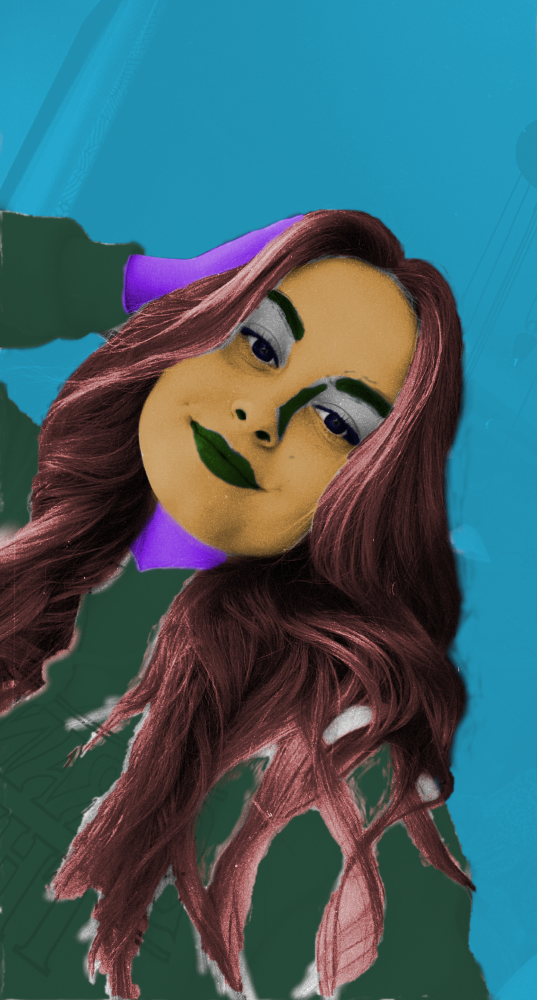
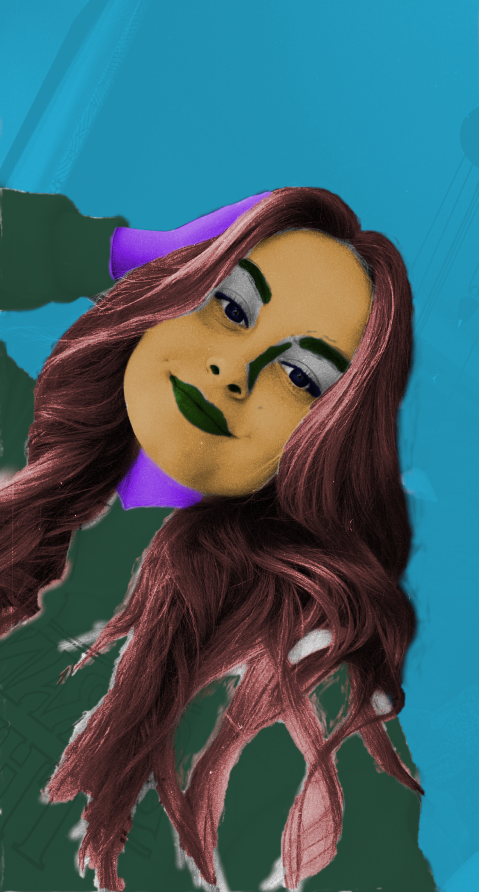

U ovoj vježbi kreirali smo vlastiti font za slovne znakove svog imena i hrvatske slovne znakove s kvačicama pomoću programa FontForge te ga testirali u tekstualnom dokumentu.
U progroamu Inkscape kreirali smo krivulje, definirali im boju i debljinu obruba te napravili Blend. Na krivulje smo napisali inicijale i napravili masku.
Krivulje u PDF-uU ovoj vježbi u Inkscapeu crtali smo zatvorene oblike, kopirali ih, grupirali, rotirali i na njih aplicirali ranije pripremljenu boju...
CvijetKao što sam naziv vježbe govori, bavili smo se izradom složenih objekata od više staza spajanjem ili oduzimanjem oblika. Aplicirali smo različite vrste gradijenata te transparenciju.
Složeni objekt iz uputeU projektnim zadacima uvijek smo nastojali ujediniti i prikazati sve naučeno iz određenog područja grafičkog dizajna.
PDF TurtleU programu Gimp bavili smo se retuširanjem, odnosno uklanjanjem nedostataka na slici kloniranjem, kopiranjem selekcija u layere i zamućivanjem, postizanjem realističnog efekta te lokalnom i globalnom korekcijom boja.
Slikama ili njezinim određenim dijelovima možemo mijenjati boju tako da selektiramo dijelove koje želimo te na njih dodamo masku kojom skrivamo ili otkrivamo efekte kolorizacije. Boju apliciramo na zasebne layere da ne uništimo original, a pomoću gumice i kista možemo to lako i vrlo precizno odraditi.

 

Cilj ove vježbe jest spajanje izrezanih dijelova različitih fotografija u jednu cjelinu, sliku tako da ona izgleda što realističnije. Sleketiramo, izrezujemo Škarama ili putem kanala te korigiramo detalje pomoću Kista i Gumice u Quick mask-u.
U projektnom zadatku 2 smo također kombinirali više fotografija, uljučujući i vlastite tako da napravimo što realističniju sliku sa što više elemenata.

Kinemagraf je isječak u gif formatu čije se sekvenca ponavlja u beskonačnost, a spaja pokretnu i statičnu grafiku.
U ovoj vježbi naučili smo rezati i spajati video isječke iz različitih izvora, dodavati ima video efekte, brisati i dodavati zvuk te dodavati i obrađivati statični i pokretni tekst.
Stvaranje web sadržaja, točnije adresa, (tekst, sliku, video, zvuk) putem jezika HTML kojeg stiliziramo jezikom CSS.
LINK za web adresu